·
Le Générateur de Roadbook transforme une trace GPX (ou un parcours dessiné sur la carte) en roadbook de rallye-raid : une liste de notes à trois cases (distance, tulipe, instructions), exportable en GPX OpenRally pour le Roadbook Reader, ou imprimable en PDF. La version de l'appli est indiquée en bas du menu ⋯.
Ouvrir GPX (ou Dessiner) : on charge ou on trace le parcours.
Générer le roadbook : l'appli repère les intersections sur les chemins et calcule tulipes, distances et caps.
Exporter GPX ou Imprimer : on récupère le roadbook.
Ensuite on peut corriger une note (✎), en ajouter une en cliquant sur la trace, ou poser des waypoints (WPV, WPM, DZ…).
En haut : le nom du roadbook (modifiable) et la barre de boutons.
À gauche : la carte, avec la recherche de lieu, le choix du fond et des couches, et la case « Rayons des waypoints ».
À droite : le roadbook, c'est-à-dire la case de description puis les notes, une par ligne. Le titre de la colonne indique la distance totale et le nombre de notes.
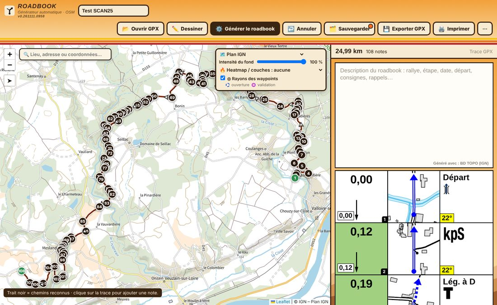
| Bouton | À quoi il sert | Effet |
|---|---|---|
| 📂 Ouvrir GPX | Charge une trace GPX, ou un projet (.json) ou un GPX exporté avec son projet | Affiche la trace ; si le fichier contient un roadbook et son projet, le roadbook est restauré |
| ✏️ Dessiner | Ouvre le mode dessin (voir chapitre 6) | Permet de poser des points sur la carte, le tracé suit les chemins |
| ⚙️ Générer le roadbook | Lance la génération (chapitre 2) | Crée toutes les notes automatiques |
| ↩️ Annuler | Annule la dernière modification (Ctrl+Z) | Grisé tant qu'il n'y a rien à annuler |
| 🗂️ Sauvegarder | Enregistre le projet en cours (fichier .json) | Le point orange indique des modifications non enregistrées |
| 💾 Exporter GPX | Exporte au format GPX OpenRally (chapitre 8) | Choix : roadbook seul ou roadbook + projet |
| 🖨️ Imprimer | Imprime ou enregistre en PDF | Bande de 3 cases de 48 mm, 5 notes par page A4 |
| ⋯ | Menu des autres fonctions | Analyse de la trace, fichiers, thème, réglages, aide |
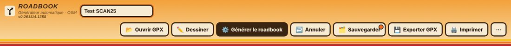
Analyse de la trace : Étapes, Mesurer un cap / liste des virages, Altitude et horaires, Marqueurs, Contrôler les notes.
Fichiers : Enregistrer le projet (.json), Enregistrer les chemins OSM, Charger des chemins OSM, Nouveau roadbook.
Configuration : Thème (Dakar jour / Bivouac nuit), Réglages de génération, Aide.
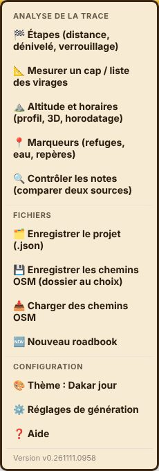
Le champ « Lieu, adresse ou coordonnées » en haut à gauche de la carte accepte un nom de lieu, une adresse ou des coordonnées. En France, il utilise le géocodeur de l'IGN ; ailleurs, Photon (OpenStreetMap). Un repère apparaît quelques secondes sur le lieu trouvé.
Un clic droit (ou un appui long sur écran tactile) sur la carte ou sur la trace ouvre une bulle « Ouvrir dans Google Street View ». Le lien s'ouvre dans un nouvel onglet, sur le panorama le plus proche. Aucune note n'est ajoutée.
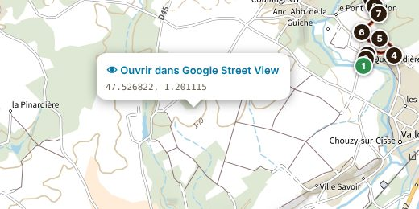
⋯ › Thème bascule entre Dakar jour (fond sable, par défaut) et Bivouac nuit (fond sombre, plus reposant le soir).
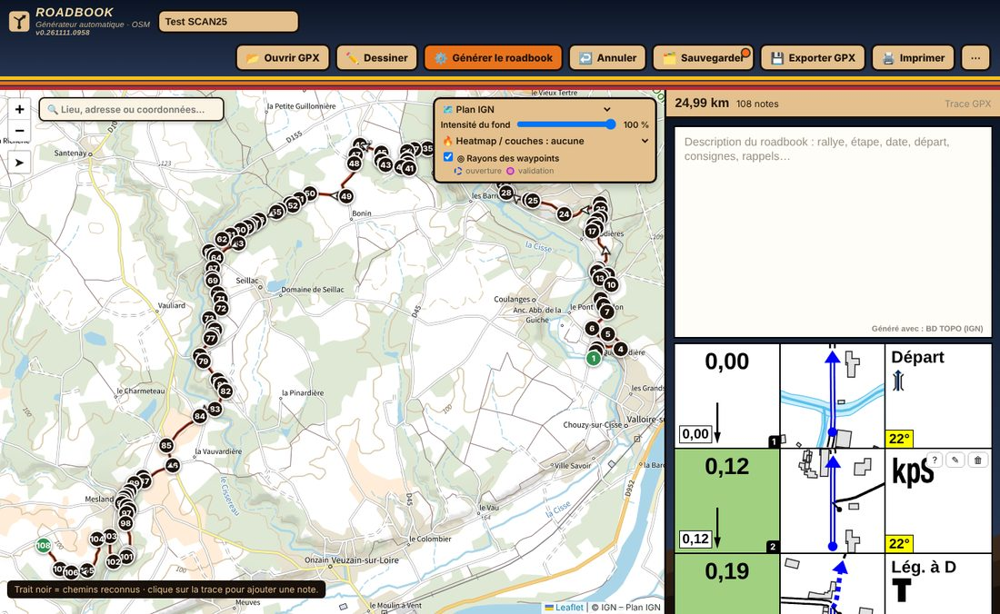
Le bouton ⚙️ Générer le roadbook télécharge les chemins autour de la trace, recale la trace dessus, repère chaque intersection et fabrique les notes avec leur tulipe. Les notes ajoutées, déplacées ou modifiées à la main ne sont jamais supprimées par une nouvelle génération.
Au clic, une fenêtre demande deux sources de données, car elles ne servent pas à la même chose :
Tulipes : la source qui dessine les routes, pistes et carrefours. En France, la BD TOPO de l'IGN est la plus fidèle.
Instructions de la 3e case : la source qui fournit les noms de routes, ponts, numéros et repères. OSM détaillé est le plus complet.
On peut prendre la même source pour les deux. Si elles diffèrent, l'appli charge un second réseau pour les instructions seulement ; si ce second réseau est indisponible, elle utilise la source des tulipes et le dit. Une phrase sous les listes annonce ce que le descriptif indiquera (« Tulipes : … · Instructions : … »).
| Source | Particularités |
|---|---|
| BD TOPO (IGN) | Réseau très fidèle, France seulement. Routes, chemins, ronds-points, ponts, gués, noms et numéros de routes, eau, bâtiments |
| OpenFreeMap vectoriel (OSM) | Rapide, partout dans le monde, sans clé. Nombre de repères plus limité |
| OSM détaillé (Overpass) | Le plus complet (clôtures, STOP, sable, pentes…) mais plus lent, et les serveurs gratuits sont parfois saturés |
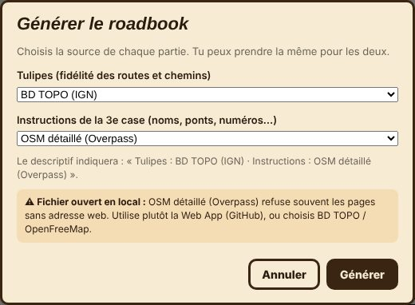
Attention avec OSM détaillé. Ouvert depuis un fichier local, le navigateur n'envoie pas d'adresse web et les serveurs Overpass refusent souvent la demande. Un encadré orange le signale dans la fenêtre. Utilise alors la Web App hébergée sur GitHub, ou choisis la BD TOPO ou OpenFreeMap. Overpass est aussi plus patient qu'avant (4 tours des 5 serveurs, avec une attente qui double), puis bascule sur OpenFreeMap en prévenant.
Une barre de progression indique l'étape (téléchargement des chemins, recalage de la trace, repérage des intersections, dessin des tulipes) et le temps écoulé. Annuler arrête la génération.
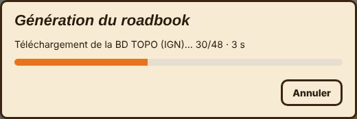
Quand c'est fini, une fenêtre Roadbook généré — rapport reste ouverte jusqu'au clic sur Fermer :
le nombre de notes, d'intersections, de virages serrés et de repères ;
les notes gardées (modifiées à la main) et les notes recalculées ;
le pourcentage de parcours reconnu sur les chemins ;
les sources réellement utilisées ;
un bloc À savoir avec les avertissements (repli de source, couches non chargées…) et l'alerte « Parcours peu reconnu » si moins de 60 % de la trace a pu être recalée.
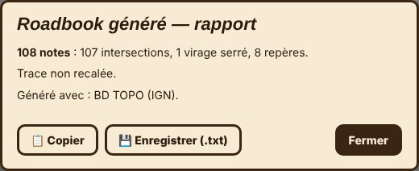
Le rapport se garde ouvert jusqu'à ce que tu le fermes. 📋 Copier le place dans le presse-papiers, 💾 Enregistrer (.txt) le sauvegarde en fichier texte (nom du roadbook, date, version, résultat et avertissements).
Le rapport liste aussi les panneaux et obstacles repérés mais écartés, avec la raison (par exemple : posé sur une autre voie que la tienne, après le carrefour, mauvaise direction). Tu peux le rouvrir à tout moment avec ⋯ → 📋 Dernier rapport de génération.
Si le parcours est peu reconnu, augmente Écart maxi trace ↔ chemins dans les réglages (par exemple 70 m), puis régénère.
Le trait noir sur la carte est la partie de la trace recalée sur les chemins : les intersections sont repérées sur ce trait. Des flèches orange indiquent le sens de la trace.
Chaque note du roadbook tient sur une ligne de trois cases carrées identiques, comme dans un roadbook FIM / FIA. Le roadbook commence par une grande case de description, puis les notes dans l'ordre du parcours.
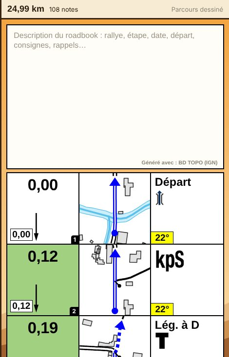
Au survol d'une note, trois boutons apparaissent : ? (pourquoi cette note), ✎ (modifier) et 🗑 (supprimer).
| Case | Contenu |
|---|---|
| 1re case (distance) | Kilométrage en haut (avec une virgule), distance depuis la note précédente dans un cadre en bas à gauche, symbole du waypoint à droite, numéro de la note dans l'onglet noir. Une flèche longue apparaît si la note suivante est à 300 m ou moins |
| 2e case (tulipe) | Dessin du carrefour : point = on arrive ici, flèche = direction à prendre |
| 3e case (instructions) | Direction, symboles du lexique, texte, danger (! rouges en haut à gauche) et CAP dans un encadré jaune en bas à gauche |
Couleurs de la 1re case (tableau FIM) : fond vert quand la note précédente est à 300 m ou moins ; bleu clair pour un WPM, jaune pour un WPC, saumon pour un WPS, rose pour un WPN, orange pour une zone DZ, vert vif pour une fin de zone FZ, gris pour DN / FN / DT / FT.
Cadres colorés : orange du début à la fin d'une zone de vitesse (DZ → FZ) ou d'une neutralisation avec vitesse ; rouge pour un WPS ou un danger 3 ; rose autour de la tulipe d'un CP.
Bleu pur = ton parcours (trait fin, flèche en bleu).
Noir = les autres chemins, découpés là où le parcours passe.
Double trait = route goudronnée ; trait plein = piste ; pointillés = sentier ou petite piste.
Bleu ciel = cours d'eau ; rectangles gris = bâtiments.
Le noir continue avant le point de départ et après la flèche : c'est la route d'où l'on vient et où l'on va (réglable).
La génération crée : Départ et Arrivée, intersections (TD, Lég. à D/G, À D/G, Épingle, Serrer à D/G pour les fourches), ronds-points (une seule note, prise au milieu de l'anneau, avec le numéro de la sortie), virages serrés hors intersection, passages hors piste, changements de goudron, et les repères (gués, ponts, tunnels, passages à niveau, villages, églises, châteaux d'eau, antennes…). Le regroupement sur une même route (FRO) ou piste (FPP) évite d'écrire une note par carrefour quand le parcours ne quitte pas la route.
Les lignes de texte connues sont remplacées par leur symbole du lexique FIA (Pont, Tunnel, Gué, rond-point, TD → kpS, Serrer à D → kpR…) et un symbole ET s'insère entre les symboles qui se combinent.
Dans la fenêtre d'une note, l'encadré Pourquoi cette note ? explique son origine : par exemple « Intersection à 3 branches : tourner à gauche · données IGN », ou « 8 carrefours regroupés : la trace reste sur la même route D 28 ».
Un clic sur le crayon d'une note ouvre sa fenêtre, avec quatre onglets.
Onglet Note
| Champ | Définition | Effet |
|---|---|---|
| Texte de la note | Première ligne en gros, lignes suivantes plus petites | Remplace le texte automatique (la note est alors marquée comme modifiée) |
| CAP (°) | Cap de sortie, de 0° (nord) à 360° | Affiché dans l'encadré jaune de la 3e case |
| 📐 Mesurer | Mesure le cap sur la carte (voir chapitre 5) | Remplit le champ CAP |
| Danger | Aucun, ! (niveau 1), !! (niveau 2), !!! (niveau 3) | Points d'exclamation rouges en haut à gauche ; le niveau 3 donne un cadre rouge |
| Distance (km) | Position de la note sur le parcours | Modifiable à la main |
| Couleur du texte | Noir ou autre couleur | Change la couleur du texte de la note |
| Gras | Normal (1re ligne en gras), Tout en gras, Rien en gras | Style du texte |
| Afficher le CAP sur cette note | Case à cocher | Montre ou cache l'encadré du CAP |
| Carburant (ravitaillement) | Case à cocher | Ajoute le symbole de pompe à carburant dans la 1re case |
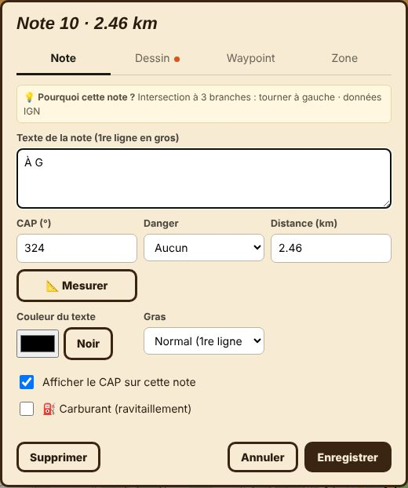
Onglet Dessin
Rayon dessiné dans la tulipe (m) : plus grand = la tulipe montre une zone plus large autour du carrefour (de 20 à 150 m, propre à cette note).
✏️ Modifier la tulipe (traits, points) : ouvre l'éditeur de tulipe (chapitre 4).
Symboles du lexique FIA : deux cases côte à côte montrent le rendu réel de la tulipe et de la case description. On y glisse des symboles ; Taille (curseur ou molette), Rotation, Retirer ce symbole, Mettre en avant-plan / en arrière-plan règlent chaque symbole. ＋ Texte ajoute un texte libre déplaçable, ＋ Ajouter des symboles ouvre la liste (recherche en français ou en anglais, onglets par catégorie : Pistes, Sur la piste, Caps, Sécurité, Dunes / sable, Symboles, Contrôles, Abréviations), 📥 Importer mon symbole ajoute une image personnelle.
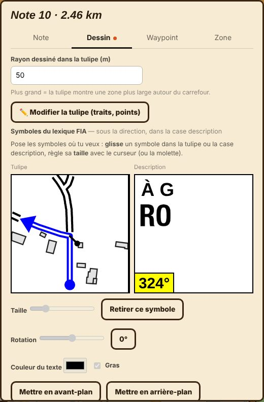
Onglet Waypoint et onglet Zone : voir le chapitre 5.
Boutons : Supprimer (efface la note), Annuler, Enregistrer.
Ajouter : un clic sur la trace pose une note à cet endroit, analysée comme à la génération (tulipe, symboles, repères proches). Elle porte l'étiquette « manuelle » à l'écran (pas à l'impression) et survit à une nouvelle génération. Dans une zone de carrefours regroupés, la tulipe est dessinée à l'endroit cliqué, pas recopiée de la note voisine.
Déplacer : un clic sur le numéro d'une note la sélectionne ; seule la note sélectionnée se déplace. On la glisse le long de la trace (une bulle indique l'écart et le nouveau km), puis une fenêtre demande de confirmer. Annuler remet la note en place. Le déplacement est libre : la note reste exactement où on la dépose, et son contenu est régénéré pour ce nouvel endroit.
Supprimer : bouton Supprimer de la fenêtre de la note.
La grande case en tête du roadbook accueille un texte libre (rallye, étape, date, départ, consignes). Il est enregistré automatiquement, imprimé en haut de la page 1 (il compte pour 2 places) et ajouté dans le champ description du GPX exporté.
Se lance depuis l'onglet Dessin d'une note, avec ✏️ Modifier la tulipe (traits, points). Il sert à corriger un dessin généré : chemin manquant, trait en trop, tracé à lisser.
| Commande | Définition | Effet |
|---|---|---|
| Clic sur un trait | Choisit le trait | Ses points deviennent visibles |
| Glisser un point | Déplace le point | Le trait suit |
| Clic sur le trait choisi | Ajoute un point à cet endroit | Permet de régler une courbe |
| Route / Piste / Hors piste | Type du trait choisi | Double trait, trait plein ou pointillés |
| ➖ Retirer le point | Supprime le point choisi | Le trait se redresse |
| ✂️ Simplifier | Réduit le nombre de points du trait | Trait plus net, utile au doigt |
| 🗑 Supprimer le trait | Efface le trait choisi | Le carrefour est simplifié |
| ＋ Nouveau trait | Dessine un chemin absent | Le trait neuf se choisit puis se règle |
| Annuler / Enregistrer | Abandonne ou garde les retouches | Une tulipe retouchée est conservée à la régénération |
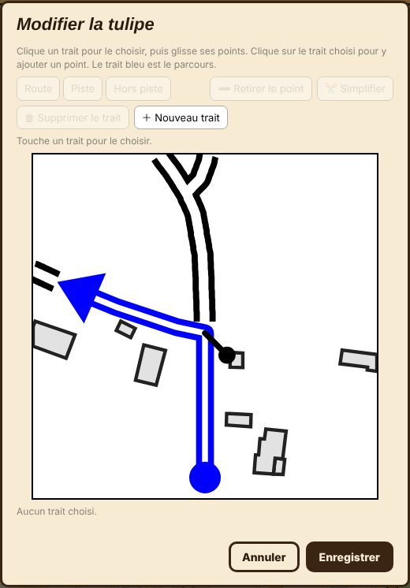
Le trait bleu est le parcours : il se déplace comme les autres, mais il reste le fil conducteur de la tulipe.
⋯ › Contrôler les notes compare, autour de chaque note (40 m), les voies connues par deux sources de données. Une note est signalée (⚠) quand l'une des sources montre au moins 25 m de voie que l'autre ne montre pas. Rien n'est modifié par le contrôle lui-même.
Choisis la Source de données (celle des tulipes actuelles) et le Fond à comparer. Choix possibles : BD TOPO (IGN), Plan IGN vectoriel (BD TOPO), OpenFreeMap (OSM).
Clique Lancer le contrôle : l'appli télécharge la seconde source si besoin et liste les notes à revérifier, avec le nombre de mètres de voie en désaccord.
Touche une ligne : la fenêtre affiche les deux tulipes côte à côte (A et B), et la carte derrière reste utilisable (zoom, déplacement) pour juger sur le terrain.
Clique Garder A ou Garder B : la tulipe choisie remplace celle de la note, qui est alors marquée comme retouchée. Les flèches ‹ › passent à la note signalée suivante ou précédente, ← Liste revient à la liste.
Effacer les ⚠ retire les marques d'avertissement sans rien changer aux notes.
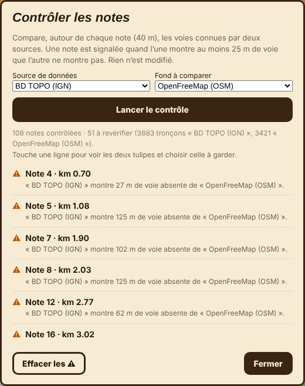
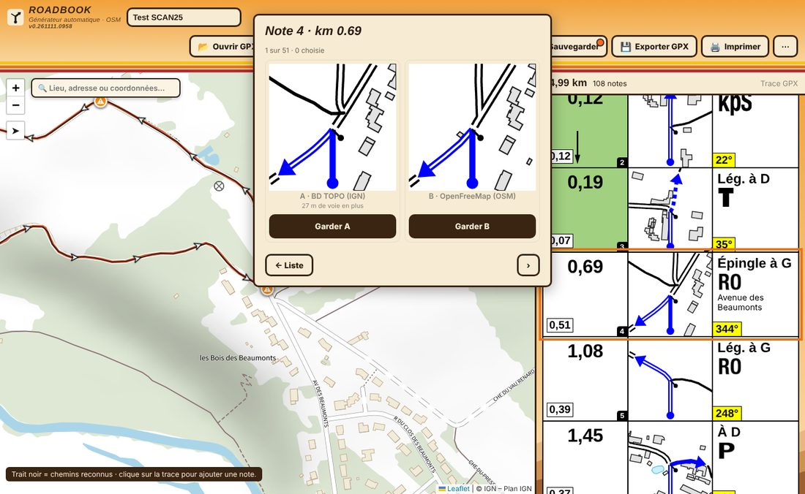
Usage avancé : en choisissant la meilleure tulipe note par note, on obtient un roadbook issu de deux sources. Le descriptif indique alors « tulipes choisies avec … (n notes) ».
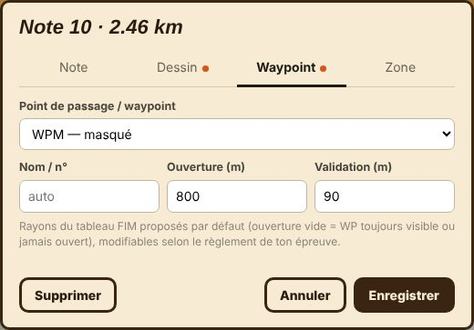
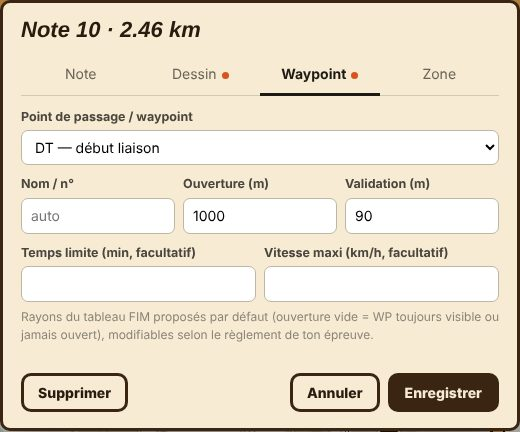
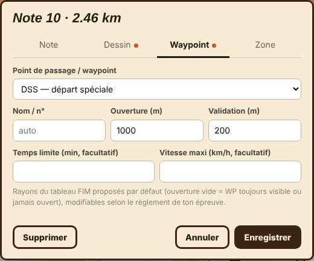
Un waypoint transforme une note en point de passage du règlement : le symbole officiel du lexique FIM apparaît dans la 1re case, des cercles s'affichent sur la carte et le GPX exporté le déclare au lecteur. Un seul waypoint principal par note ; il se combine avec une zone de vitesse et le carburant.
| Waypoint | Signification | Rayons par défaut (ouverture / validation) |
|---|---|---|
| WPV | Visible | – / 200 m |
| WPM | Masqué | 800 / 90 m |
| WPS | Sécurité | 1000 / 30 m |
| WPE | Éclipse | 1000 / 90 m |
| WPC | Contrôle | – / 300 m |
| WPN | Navigation | 800 / 200 m |
| WPP | Passage | 100 / 20 m |
| CP | Contrôle de passage (cadre rose autour de la tulipe) | 1000 / 90 m |
| CH | Contrôle horaire (liaison) | pas de rayons par défaut |
| DSS | Départ de spéciale | 1000 / 200 m |
| ASS | Arrivée de spéciale | 800 / 90 m |
| DN / FN | Début / fin de neutralisation | 1000 / 90 m |
| DT / FT | Début / fin de liaison | 1000 / 90 m |
Les champs de l'onglet :
Nom / n° : « auto » par défaut, ou un nom à vous (WP 12, CP 3…).
Ouverture (m) : distance à laquelle le waypoint devient actif. Vide = toujours visible ou jamais ouvert, selon le type.
Validation (m) : distance à laquelle il est validé. Les valeurs du tableau FIM sont proposées et modifiables selon le règlement de l'épreuve.
Temps limite (min, facultatif) : pour un DSS ou un DT. Exporte dans le GPX la balise de contrôle de temps (timecontrol allowed), pour que le lecteur puisse calculer une heure limite. La lecture de cette limite et la pénalité de dépassement sont en cours de développement côté lecteur.
Vitesse maxi (km/h, facultatif) : pour un DN ou un DT avec limite de vitesse (symbole orange).
Durée de neutralisation (min) : pour un DN. Exportée en secondes dans le GPX.
Les cercles s'affichent sur la carte quand la case ◎ Rayons des waypoints est cochée : cercle bleu pointillé = ouverture, cercle violet = validation. La note sélectionnée a des traits plus épais. Les rayons d'un DN sont réglables comme ceux des autres waypoints et exportés dans le GPX. Le choix de la case est mémorisé dans le navigateur.
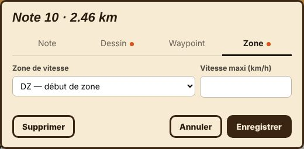
DZ — début de zone : début d'une zone à vitesse limitée. Le champ Vitesse maxi (km/h) donne le chiffre du panneau orange.
FZ — fin de zone : fin de la zone en cours ; le panneau est barré.
FZ + DZ : fin d'une zone et début de la suivante sur la même note.
Effet : toutes les notes entre DZ et FZ reçoivent un cadre orange, la 1re case change de couleur (orange pour DZ, vert vif pour FZ), et le GPX porte les balises dz / fz avec leur vitesse. Rayons fixes de 1000 m / 90 m.
Le champ Danger de l'onglet Note ajoute 1, 2 ou 3 points d'exclamation rouges en haut à gauche de la 3e case. Le niveau 3 (comme un WPS) dessine un cadre rouge sur la ligne. Le lecteur les reprend depuis le GPX.
À la génération, l'appli ajoute aussi des notes de danger repérées sur la carte (passage piéton, feux tricolores, ralentisseur, bandes sonores, etc.) avec leurs symboles, et signale l'entrée et la sortie d'un village. Chaque type se coupe ou se remet dans les réglages (« Quelles notes créer »).
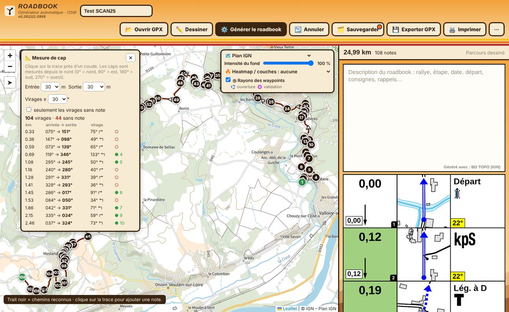
⋯ › Mesurer un cap / liste des virages ouvre un panneau de mesure sur la carte. Les caps sont mesurés depuis le nord (0° = nord, 90° = est, 180° = sud, 270° = ouest).
Mesure ponctuelle : on clique sur la trace près d'un coude ; le panneau donne le cap d'arrivée et le cap de sortie.
Entrée (15, 30, 50 m) et Sortie (15 à 200 m) : longueur de trace utilisée avant et après le coude pour calculer ces caps.
Virages ≥ (20 à 90°) : angle minimal pour qu'un virage soit listé.
Seulement les virages sans note : limite la liste aux virages qui n'ont pas encore de note.
La liste : une ligne par virage avec le km, les caps arrivée → sortie, l'angle et le sens (↱ droite, ↰ gauche), et un indicateur ○ (pas de note) ou ● n (note n existante). Elle permet de poser une note avec son CAP là où il en manque.
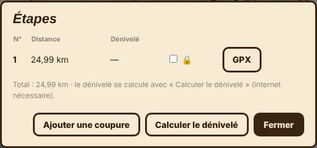
⋯ › Étapes découpe le parcours : distance et dénivelé par étape, cadenas 🔒 pour verrouiller une étape (aucune modification n'y est possible), bouton GPX pour exporter une étape seule, Ajouter une coupure pour créer une nouvelle étape et Calculer le dénivelé (internet nécessaire).
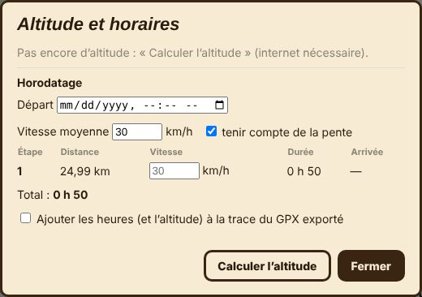
⋯ › Altitude et horaires : Calculer l'altitude donne le profil et la vue 3D. L'Horodatage estime les horaires : heure de départ, vitesse moyenne (avec ou sans tenir compte de la pente), durée et arrivée par étape. La case Ajouter les heures (et l'altitude) à la trace du GPX exporté les inscrit dans la trace.
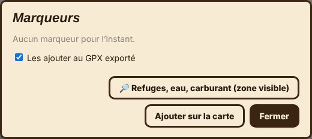
⋯ › Marqueurs place sur la carte des repères utiles : refuges, eau, carburant. Refuges, eau, carburant (zone visible) les cherche dans la zone affichée ; Ajouter sur la carte pose un marqueur à la main. La case Les ajouter au GPX exporté les inclut dans le fichier.
La liste en haut à droite de la carte choisit le fond. Ces fonds sont des images pour regarder le terrain : les tulipes ne viennent jamais du fond affiché, mais de la source de chemins choisie à la génération.
| Fond | Usage |
|---|---|
| SCAN 25 (cartes IGN) | Carte topographique de référence en France |
| Plan IGN | Plan mis à jour chaque mois depuis la BD TOPO, le plus proche des tulipes en mode IGN |
| Plan IGN vectoriel (BD TOPO) | Version vectorielle du plan IGN |
| Photos aériennes | Photographies aériennes IGN |
| OpenTopoMap | Relief et courbes de niveau, monde entier |
| OSM standard | Carte OpenStreetMap classique |
| CyclOSM (pistes) | Met en valeur pistes et chemins |
| OpenFreeMap vectoriel (OSM) | Fond vectoriel, celui du mode rapide |
| Satellite, Esri Topo | Images satellite et carte topo Esri, monde entier |
| ➕ Ajouter / gérer mes fonds | Fonds personnalisés (adresse avec {z}/{x}/{y}) |
Intensité du fond : un curseur de 0 à 100 % atténue le fond pour mieux voir la trace et les notes.
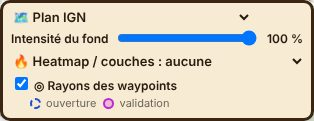
Le menu Heatmap / couches superpose des informations utiles au terrain. Un second curseur règle leur intensité.
Traces GPS (OpenStreetMap) : où les gens roulent réellement.
Sentiers de randonnée balisés, Itinéraires VTT balisés, Itinéraires vélo balisés.
LiDAR HD : relief sans les arbres. Ombrage du relief : estompage (flou en zoom serré).
Pentes fortes (≥ 30°) : utile en montagne.
Forêts publiques (ONF), Points de secours en forêt (PRSF), Accessibilité forêts : portage et débardage.
La case ◎ Rayons des waypoints affiche sur la carte les cercles d'ouverture (bleu, pointillés) et de validation (violet) de chaque waypoint (voir chapitre 5).
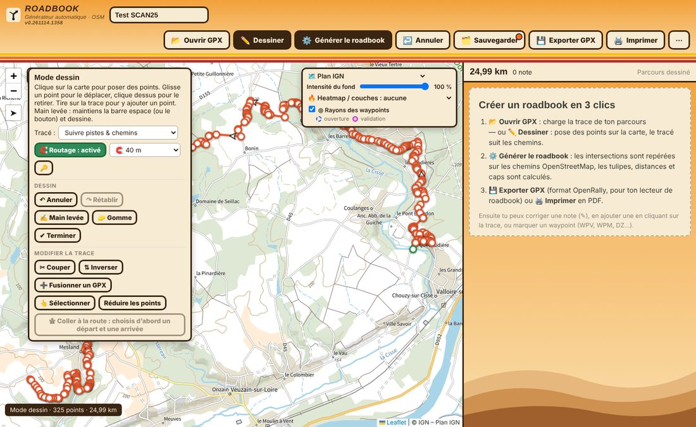
✏️ Dessiner pose des points sur la carte : le tracé suit les chemins. Si une trace est déjà chargée, l'appli demande si on veut la modifier (les notes sont gardées et à régénérer) ou l'effacer pour en dessiner une nouvelle (les notes sont alors supprimées).
Poser des points : un clic pose un point, on glisse un point pour le déplacer, un clic dessus le retire, et on tire sur la trace pour y ajouter un point.
🧲 Routage : activé / désactivé (touche R) : à tout moment, tu choisis si les prochains points suivent les chemins (vert) ou sont reliés en ligne droite pour passer hors piste (blanc). Chaque tronçon garde le réglage de sa pose : changer le bouton ne modifie pas ce qui est déjà tracé. Le menu 🧲 à côté règle la distance de l'aimant (5, 10, 20, 30, 40 ou 50 m) ou le coupe (Aimant coupé : le routage reste actif, mais les points sont posés exactement où tu cliques).
Aimant : quand le routage est activé, un point posé ou déplacé se replace sur la route ou le chemin le plus proche. S'il en est à plus de la distance réglée (40 m par défaut), il n'est pas posé et un message te le dit : rapproche-le, ou désactive le routage. Si le chemin n'est pas connu du calculateur d'itinéraire mais figure sur la carte (OpenStreetMap), le tracé le suit quand même : il suit la route jusqu'à la jonction, puis le chemin. Si la jonction n'est pas trouvée, le tronçon reste en ligne droite (message à l'écran). Déplacer un point recalcule les tronçons qui le touchent.
Tracé : comment relier les points.
| Choix | Effet |
|---|---|
| Suivre pistes & chemins | Itinéraire (BRouter) qui privilégie pistes et chemins |
| Au plus court (sentiers inclus) | Le chemin le plus direct |
| Petites routes (cyclo) | Itinéraire sur petites routes |
| Routes (voiture) | Itinéraire routier |
| Randonnée, VTT, Vélo de route, Marche (OpenRoute) | Profils OpenRouteService ; demandent une clé personnelle (bouton 🔑) |
| Ligne droite | Relie les points en ligne droite |
Dessin
↶ Annuler / ↷ Rétablir (Ctrl+Z / Ctrl+Y).
✍ Main levée : on maintient la barre espace (ou le bouton) et on dessine librement.
🧽 Gomme : efface des points en les survolant, bouton enfoncé.
✔ Terminer : quitte le mode dessin.
Modifier la trace
✂ Couper : un clic sur la trace supprime le début ou la fin, ou change le point de départ d'une boucle.
⇅ Inverser : inverse le sens du parcours.
➕ Fusionner un GPX : ajoute un autre fichier GPX à la suite ou avant.
👆 Sélectionner : choisit un point (1 clic) ou une section (clic sur le 1er puis le dernier point) ; « Coller à la route » ne traitera que la sélection.
Réduire les points : diminue le nombre de points de la trace.
🛣 Coller à la route : recalcule la sélection (un point ou une section choisie avec 👆) pour qu'elle suive les chemins, selon le mode Tracé choisi. Le bouton reste grisé tant que rien n'est sélectionné.
Une étape verrouillée (cadenas des Étapes) ne peut pas être modifiée.
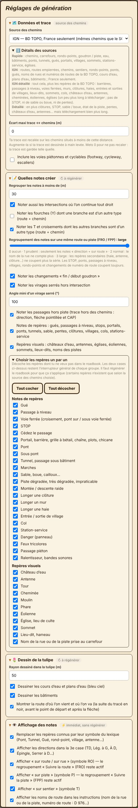
⋯ › Réglages de génération ouvre quatre blocs repliables. Ils sont enregistrés avec le projet. Le symbole ↻ à régénérer signale un bloc dont les changements ne s'appliquent qu'après une nouvelle génération ; ⚡ immédiat signale un bloc dont les changements s'appliquent tout de suite. En bas : Valeurs par défaut, Annuler, Enregistrer.
| Option | Définition | Effet |
|---|---|---|
| Source des chemins | Rapide (fond vectoriel OpenFreeMap, par défaut), IGN (BD TOPO, France), IGN détaillé (BD TOPO avec les repères), Détaillé (OpenStreetMap complet via Overpass) | Valeur de départ de la fenêtre de génération. Le détail des repères disponibles s'affiche dans « Détails des sources » |
| Écart maxi trace ↔ chemins (m) | Distance maximale pour recaler la trace sur un chemin (0 à 100, 40 par défaut) | Plus grand : retrouve une trace dessinée à main levée. 0 : la trace est gardée telle quelle, sans recalage |
| Inclure les voies piétonnes et cyclables | footway, cycleway, escaliers | Ajoute ces voies au réseau, donc des carrefours en plus |
| Option | Définition | Effet |
|---|---|---|
| Regrouper les notes à moins de (m) | Distance en dessous de laquelle deux notes sont fusionnées (5 à 100 m, 30 par défaut) | Moins de notes serrées |
| Noter aussi les intersections où l'on continue tout droit | Un TD est noté à chaque carrefour | Décoché : beaucoup moins de notes |
| Noter les fourches (Y) dont une branche est d'un autre type | Y route + chemin | Ajoute les fourches qui changent de type de voie |
| Noter les T et croisements dont les autres branches sont d'un autre type | T ou croisement route + chemin | Ajoute ces carrefours |
| Regroupement des notes sur une même route ou piste (FRO / FPP) | Curseur : 0 aucun, 1 prudent, 2 normal, 3 large | Plus haut : moins de notes quand on reste sur la même route. Les STOP, ponts, passages à niveau, villages, ronds-points et changements de numéro de route coupent toujours la série |
| Noter les changements « fin / début goudron » | Passage route ↔ piste | Ajoute une note Fin / Début goudron |
| Noter les virages serrés hors intersection | Virages sans carrefour | Ajoute les épingles et virages serrés |
| Angle mini d'un virage serré (°) | De 60 à 170 | Plus petit : plus de virages notés |
| Noter les passages hors piste | Trace en dehors des chemins | Direction, flèche en pointillés et CAP |
| Notes de repères | Gués, passages à niveau, stops, portails, ponts, tunnels, sable, pentes, clôtures, villages, cols, stations-service | Interrupteur général du groupe |
| Repères visuels | Châteaux d'eau, antennes, églises, éoliennes, sommets, lieux-dits, noms des pistes | Interrupteur général du groupe |
| Choisir les repères un par un | Liste de cases à décocher, avec Tout cocher / Tout décocher | Retire un type de repère précis du roadbook (certains n'existent que selon la source) |
| Option | Définition | Effet |
|---|---|---|
| Rayon dessiné dans la tulipe (m) | De 25 à 120 m, 50 par défaut | Plus grand : zone plus large autour du carrefour |
| Dessiner les cours d'eau et plans d'eau | Bleu ciel | Ajoute l'eau dans les tulipes |
| Dessiner les bâtiments | Rectangles gris | Ajoute les bâtiments dans les tulipes |
| Montrer la route d'où l'on vient et où l'on va | Prolongement du noir avant le point de départ et après la flèche | Décoché : tulipe plus épurée |
| Option | Définition | Effet |
|---|---|---|
| Remplacer les repères connus par leur symbole du lexique | Pont, Tunnel, Gué, rond-point, village, antenne… | Décoché : le texte revient |
| Afficher les directions dans la 3e case | TD, Lég. à G, À D, Épingle, Serrer à D… | Décoché : la direction disparaît de l'écran, de l'impression et du GPX ; le reste ne change pas |
| Afficher « sur route / sur rue » (RO) | Type de chemin | Décoché : symbole RO masqué, le regroupement FRO reste actif |
| Afficher « sur piste » (P) | Type de chemin | Décoché : symbole P masqué, le regroupement FPP reste actif |
| Afficher « sur sentier » (T) | Type de chemin | Décoché : symbole T masqué |
| Afficher les noms de route dans les instructions | Nom de la rue ou de la piste, numéro de route (D 976) | Décoché : noms et numéros disparaissent des notes automatiques |
| Afficher le CAP | Sur toutes les notes · Uniquement sur les notes en pointillés (sentier, hors piste) · Jamais | Appliqué tout de suite aux notes automatiques (sans régénérer) et aux notes créées ensuite ; une note modifiée à la main garde son propre réglage |
Les chemins téléchargés sont gardés dans le navigateur pour aller plus vite. Le bouton Vider cette mémoire (bas de la fenêtre) les efface. ⋯ › Enregistrer les chemins OSM en fait une copie dans un dossier au choix (fichier .rbosm) et ⋯ › Charger des chemins OSM les recharge : la génération n'a plus besoin de les télécharger.
Sauvegarde automatique : le travail est conservé tout seul dans le navigateur (trace, notes, réglages, description). On retrouve son roadbook en rouvrant l'appli.
🗂️ Sauvegarder (ou ⋯ › Enregistrer le projet) : crée un fichier projet .json à conserver ou à transmettre. Le point orange du bouton signale des modifications non enregistrées.
Rouvrir : 📂 Ouvrir GPX accepte aussi le fichier .json.
🆕 Nouveau roadbook (menu ⋯) : repart à zéro (trace, notes, description et sources enregistrées sont effacées).
↩️ Annuler / Ctrl+Z : annule les dernières modifications.
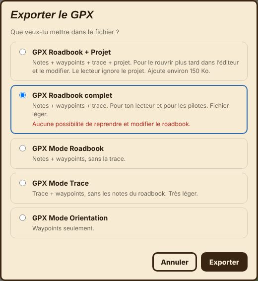
💾 Exporter GPX ouvre une fenêtre de choix :
| Choix | Contenu | À utiliser pour |
|---|---|---|
| GPX Roadbook + Projet | Notes + waypoints + trace + projet complet embarqué (environ 170 Ko de plus). Le lecteur ignore le projet | Garder une version rééditable : en rouvrant ce GPX dans l'éditeur, on retrouve le roadbook et on peut le modifier |
| GPX Roadbook complet | Notes + waypoints + trace. Fichier léger | Donner le roadbook à un pilote ou le lire dans ton lecteur. Aucune possibilité de reprendre et modifier le roadbook à partir de ce fichier |
| GPX Mode Roadbook | Notes + waypoints, sans la trace | Un lecteur qui a déjà la trace par ailleurs |
| GPX Mode Trace | Trace + waypoints, sans les notes du roadbook. Très léger | Naviguer sur la trace avec ses points de passage, zones et carburant, sans les tulipes |
| GPX Mode Orientation | Waypoints seulement (les marqueurs de la carte ne sont pas inclus) | Une navigation à l'orientation : seuls les points à rejoindre comptent |
Le fichier est un GPX OpenRally v1.0.3 : tulipes et notes en images, distance, cap, danger, waypoints avec leurs rayons d'ouverture et de validation, zones DZ / FZ avec vitesse, carburant, DN en neutralisation (durée), temps limite, description du roadbook et trace recalée. Un GPX exporté sans le projet, rouvert dans l'éditeur, ne donne que la trace. Les modes Trace et Orientation ne gardent que les points qui portent un waypoint, une zone ou du carburant, sans image de tulipe ni de note : essaie-les d'abord dans ton lecteur.
🖨️ Imprimer ouvre l'impression du navigateur, qui permet aussi d'enregistrer en PDF. La mise en page reprend le roadbook à l'écran : bande de 3 cases de 48 mm, 5 notes par page A4, un en-tête par page (nom, numéro de page, total en km). La description occupe 2 places en haut de la page 1. L'étiquette « manuelle » n'est jamais imprimée.
Quand tu ouvres le fichier HTML directement (sans adresse web), l'option OSM détaillé (Overpass) est souvent refusée. La fenêtre de génération affiche alors un avertissement avec le lien 🌐 Ouvrir la Web App : enregistre ton projet (🗂️), ouvre la Web App, puis rouvre le projet.
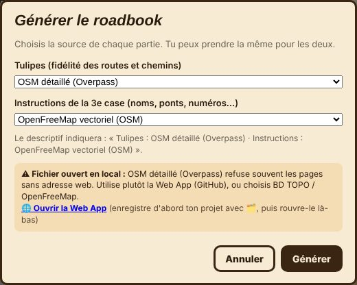
Web App (GitHub Pages) : l'appli est installée comme une application (ordinateur ou téléphone), fonctionne avec une vraie adresse web et se met à jour d'elle-même. Si l'ancienne version s'affiche encore, fermer et rouvrir l'appli recharge la nouvelle.
Fichier HTML local : pratique, mais le navigateur n'envoie pas d'adresse web aux serveurs. OSM détaillé (Overpass) y est souvent refusé ; la BD TOPO de l'IGN et OpenFreeMap marchent normalement.
Une connexion internet est nécessaire pour la carte, le calcul d'itinéraire et le téléchargement des chemins (sauf chemins déjà en mémoire).
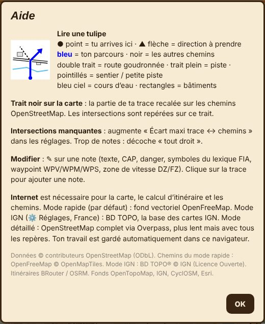
Le bouton 📖 Manuel d'utilisation du menu ⋯ ouvre ce manuel.
⋯ › Aide rappelle comment lire une tulipe, la couleur du trait noir sur la carte, et les astuces de dépannage (intersections manquantes : augmenter l'écart maxi ; trop de notes : décocher « tout droit »). Données © contributeurs OpenStreetMap (ODbL), OpenFreeMap © OpenMapTiles, BD TOPO® © IGN (Licence Ouverte), itinéraires BRouter / OSRM, fonds OpenTopoMap, IGN, CyclOSM, Esri.